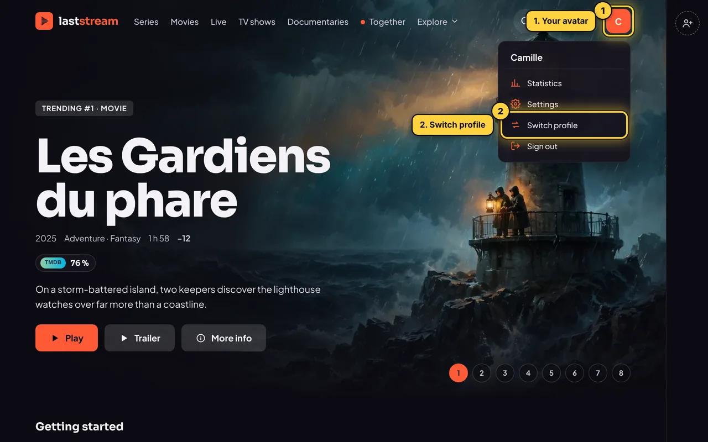
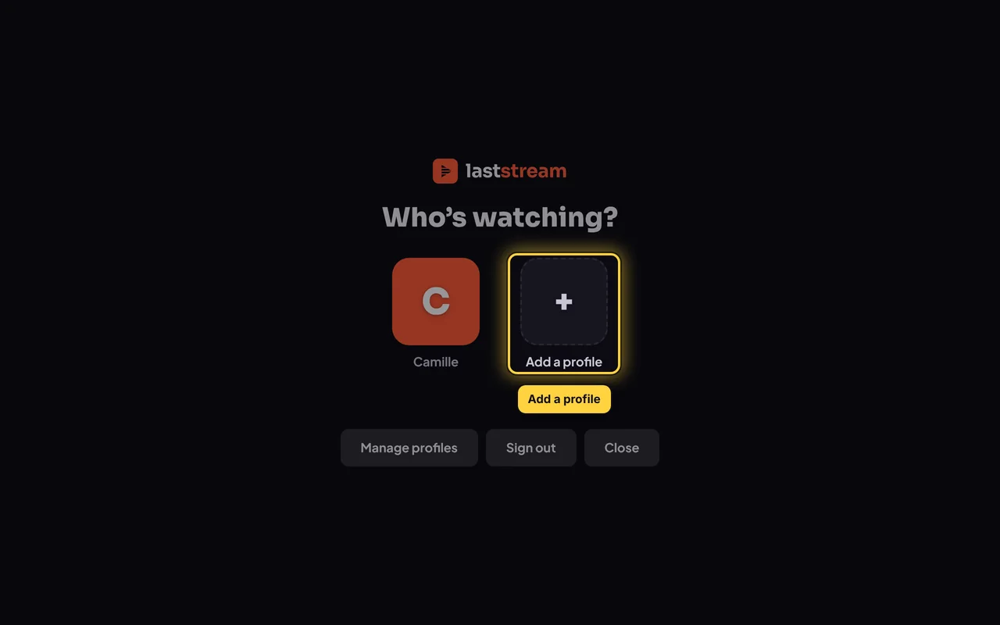
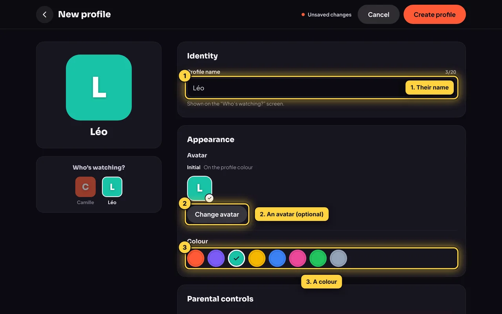
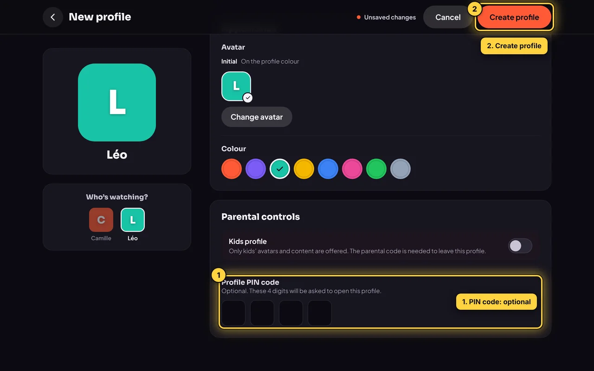
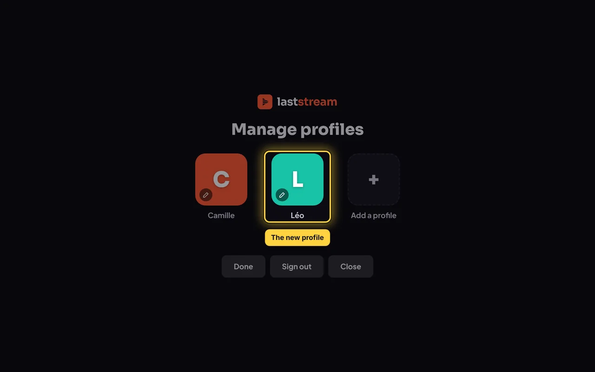

Before you start
- A signed-in account.
- Only the main profile (or someone who knows its code) can add profiles.
Steps
On each screenshot, the yellow frame shows where to tap or click; the numbers give the order. The app is in French: the screenshots show its English translation.
-
Tap your avatar at the top right (1), then “Switch profile” (2).

-
On the “Who’s watching?” screen, tap the “Add a profile” tile.

-
In “New profile”, type their name (1, 20 characters max). If you like, pick an avatar with “Change avatar” (2), then a colour from the 8 swatches (3).

-
Optional: a 4-digit “Profile PIN code” (1), asked from then on to open this profile.
Tap “Create profile” at the top right (2).

-
The new profile shows up next to the others. Tap “Done” to go back to “Who’s watching?”, then tap the profile to open it.
